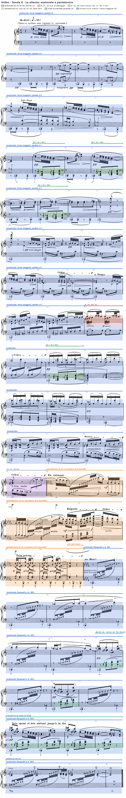
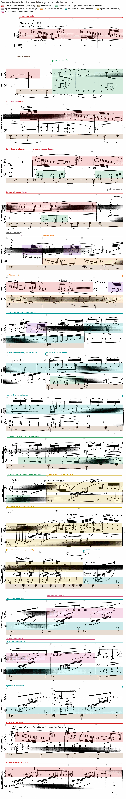
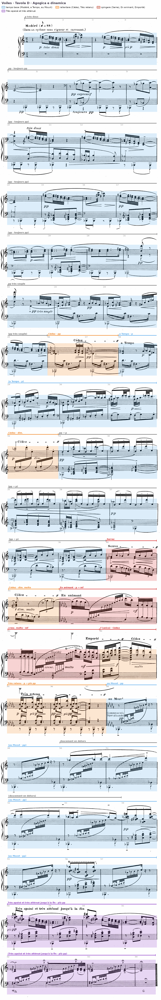
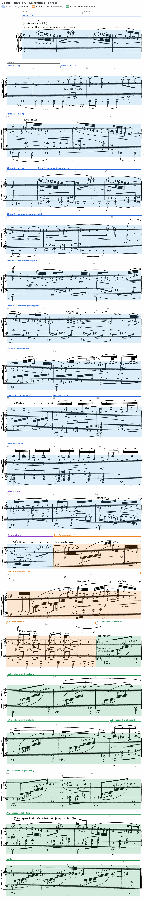

Un preludio costruito quasi per intero su una scala di sei suoni, senza una sola cadenza. La forma si legge nel cambio di collezione.
È un modo a trasposizione limitata, cioè non può essere trasposta su tutti i gradi.
D. D’Urso, C. Bertolini, Il linguaggio della musica, 5° anno, p. 248
Lezione di due ore. Seconda ora: Analisi: Debussy, «Pagodes» — la pentatonica. I compiti per casa sono alla fine.
Claude Debussy, Voiles, n. 2 dei Préludes per pianoforte, primo libro · edizione Durand, Parigi 1910, pp. 3–6 · 2/4, Modéré (croma = 88) · 64 battute, numerate per l’analisi perché l’edizione non le numera (conteggio ripetuto due volte: 17 + 17 + 14 + 16 battute nelle quattro pagine). Le altezze sono indicate con l’indice d’ottava internazionale (do4 = do centrale); le tavole A–D riportano sulla partitura i segni a cui il testo rimanda.
B4Oltre la tonalità, pp. 238–266
D. D’Urso, C. Bertolini, Il linguaggio della musica, 5° anno (Mondadori Education 2022), sezione B, unità 4: lezione B18 (il sistema pentatonico, p. 246), B19 (il sistema esatonale, p. 248) e B22, «Analizziamo un preludio per pianoforte di Debussy» (p. 258), cioè «Voiles». Da leggere prima dell’ora.
I dodici Préludes del primo libro furono pubblicati da Durand nel 1910. Come in tutta la raccolta, il titolo non sta in testa al brano ma in fondo, dopo l’ultima battuta, fra parentesi e preceduto da tre punti: «(… Voiles)». Surian collega questa collocazione alla poetica simbolista, che preferisce l’allusione alla denominazione, e ricorda che voiles può significare tanto «veli» quanto «vele» (Manuale di storia della musica, vol. IV, pp. 41–42); D’Urso e Bertolini vedono nell’ambiguità del titolo il riflesso del carattere indeterminato del brano (p. 258).
Il titolo è un dato del quarto piano, da leggere dopo l’analisi: spiegare la musica a partire dal titolo rovescia l’ordine che l’autore ha stabilito.
Un ascolto, senza partitura. Una domanda sola: dove cambia il materiale, e dove torna quello dell’inizio. Si annota soltanto il punto, con un riferimento al tempo della registrazione.
Voiles dura poco più di sessanta battute e non contiene una sola cadenza nel senso funzionale del termine: nessuna dominante, nessuna tonica, nessuna triade maggiore o minore nelle prime quarantun battute. Eppure la pagina si ascolta come un discorso ordinato, con un’esposizione, un episodio contrastante e una ripresa. Le funzioni che nella musica tonale spettano alla cadenza e alla modulazione sono qui distribuite su tre altri piani. La forma è segnata dal cambio di collezione (esatonale, pentatonica, di nuovo esatonale); il centro è affidato a un pedale di si♭, che sostituisce la tonica senza assumerne le funzioni; la continuità nasce da pochissime cellule (la terza maggiore, il passo di tono, la figura che oscilla attorno al la♭), sovrapposte in strati che occupano ciascuno un proprio registro e un proprio ritmo. La ripresa, infine, non ripete l’esposizione: la ricompone, cambiando proprio l’elemento che nelle battute iniziali dava colore all’armonia.
Le bb. 1–41 impiegano soltanto i sei suoni della scala per toni interi do–re–mi–fa♯–sol♯–la♯. Debussy non scrive mai la♯, sempre si♭; il quinto suono compare invece in due grafie, sol♯ e la♭, scelte secondo la convenienza di lettura. Già la b. 2 ne dà la prova più evidente: il bicordo la♭4–do5 è seguito, una biscroma più tardi, da sol♯5–do6, cioè dalle stesse classi di altezze un’ottava sopra, notate in altro modo. De la Motte osserva che la scrittura per toni interi non può rendere graficamente l’equidistanza dei sei suoni e che la stessa altezza viene annotata come sol♯ nella parte superiore e come la♭ in quella inferiore (Manuale di armonia, p. 322); Natoli ricava dallo stesso dettaglio che l’arabesco va letto come sovrapposizione di due scale esatonali e non come successione di terze (Percorsi di analisi musicale, p. 294). Per la stessa ragione numerose terze maggiori sono scritte come quarte diminuite (fa♯5–si♭5 alla b. 2, mi4–la♭4 alla b. 4), come nota anche Galli (Storia della musica 3, p. 228).
Il materiale melodico si riduce a tre profili. Il primo (motivo a) è l’arabesco delle bb. 1–2: due linee in terze maggiori parallele scendono per toni, sol♯5–fa♯5–mi5–re5 sopra mi5–re5–do5–si♭4, fino al la♭4–do5 della b. 2, poi saltano all’ottava superiore (sol♯5–do6) e si posano su fa♯5–si♭5. Le bb. 3–4 ripetono l’inciso e ne prolungano la discesa fino a re4–fa♯4, che sfocia nel do4–mi4 della b. 5. Alla b. 59, dove le stesse battute ritornano, il bicordo acuto è scritto la♭5–do6 e non più sol♯5–do6: la scelta fra le due grafie dipende dal contesto di lettura, non dall’altezza. Il secondo profilo (motivo b, pp expressif, b. 7) è uno spunto di tre suoni, la♭–si♭–do, raddoppiato all’ottava (la♭3–si♭3–do4 sopra la♭2–si♭2–do3) e fermo sul do tenuto della b. 8. Natoli lo definisce un’aumentazione per moto contrario dell’idea iniziale (p. 295): le terze scendono per toni in biscrome, lo spunto sale per toni in crome. Il terzo profilo (figura c, pp très souple, b. 22) è una volatina di quattro biscrome, la♭4–si♭4–la♭4–fa♯4, che gira attorno al la♭ con una nota di volta superiore e ricade di un tono. È costruita, per intero, con i tre suoni comuni alle due scale, e per questo può attraversare il confine di sezione senza cambiare forma: alla b. 42 ricompare come la♭–si♭–la♭–sol♭, con la sola differenza della grafia.
In assenza di funzioni tonali le frasi non terminano con cadenze ma con arresti, che si possono descrivere come cadenze sospese per rarefazione. La prima frase si ferma sul bicordo do4–mi4 tenuto per una battuta e mezza (bb. 5–6) e seguito da una pausa; lo stesso bicordo, sostenuto sopra le ottave di la♭ della sinistra, chiude la b. 14. La b. 21 si arresta sulla terza mi5–sol♯5, la b. 37 sul la♭5 tenuto, la b. 47 sulla terza minore mi♭–sol♭. L’ultima battuta ripete il bicordo do4–mi4 sotto una corona (b. 64), e la circolarità è voluta: il brano si ferma sulla stessa sonorità che concludeva la prima frase. Se il si♭1 debba risuonare sotto questa chiusa la partitura non lo stabilisce. L’ultimo si♭ è percosso alla b. 61; il Ped. scritto all’inizio della b. 62 serve alle scale delle ultime battute e non prescrive di trattenere il pedale precedente.
Una collezione che non contiene quinte giuste non può formare triadi maggiori né minori. Gli intervalli armonici disponibili sono soltanto la seconda maggiore, la terza maggiore e il tritono, con i loro rivolti: ogni aggregato verticale ne è una combinazione. Ne consegue che la forma non può essere articolata dalle cadenze, e l’analisi cerca gli elementi che ne fanno le veci: il centro, affidato a un pedale, e i confini, affidati al cambio di collezione.

Il pedale, infine, è a sua volta un materiale. Galli lo descrive come un elemento ritmico ricorrente, «sempre realizzato al basso sulla nota si bemolle» (p. 228), e il suo ritmo cambia con la forma: semiminime e crome portato alle bb. 5–11 e 13–20, minime tenute dalla b. 21 alla b. 43 (con la sola semiminima della b. 37), crome in levare nel Très retenu (bb. 45–47), semiminima puntata seguita dal si♭2 nei glissandi della ripresa (bb. 48–57, salvo le minime delle bb. 54 e 56), dove il salto d’ottava ne rinnova il profilo (Galli, p. 229). Tace alle bb. 1–4, 12, 31–32, 44 e 62–64: undici battute su sessantaquattro. Il silenzio della b. 12 coincide con il ritorno delle terze sul primo movimento, sopra la linea interna in ottave si♭–la♭–si♭–la♭: per una battuta il registro grave è occupato da quella linea, e il pedale riprende alla b. 13 con un ritmo nuovo (pausa di croma, semiminima, croma).
Lo spunto la♭–si♭–do ha una storia più ricca. Alle bb. 10–14 la sinistra lo rovescia in una linea in ottave che scende lentamente: re (b. 10), re–mi–re–do (b. 11), si♭–la♭–si♭–la♭ (b. 12), la♭ tenuto (bb. 13–14). Alle bb. 15, 17, 19 e 33 lo spunto diventa la voce superiore delle tre triadi aumentate, e Natoli nota che l’arabesco viene riesposto proprio sopra questa amplificazione in accordi dell’incipit della seconda idea (p. 296). Alle bb. 38–41 la stessa discesa re–do–si♭–la♭ ricompare al basso e conduce alla nota comune che apre la sezione B. Nella ripresa lo spunto si allarga in una melodia di quattro battute nel registro acuto, doucement en dehors (bb. 50–53): la♭5–si♭5–do6, do6–re6, re6–mi6–re6–do6, si♭5–la♭5. È l’unica vera melodia cantabile del brano, un arco che sale per toni fino al mi6 e ridiscende al la♭, e la si può leggere come un’aumentazione dello spunto originale.
Il motivo a non viene mai sviluppato nel senso classico, cioè frammentato e trasportato; viene invece spostato nel metro, nel registro e nella direzione. Alla b. 10 l’arabesco entra sul secondo movimento, mentre la destra tiene il do delle battute precedenti; alla b. 12 torna sul primo, e la stessa figura cambia così il proprio rapporto con l’accento. Alle bb. 18–20 le terze invertono il movimento e salgono la♭4–do5, si♭4–re5, do5–mi5, re5–fa♯5, mi5–sol♯5, ripercorrendo in senso ascendente la scala che l’inizio scendeva. Alle bb. 25–27 si contraggono in terzine e, sotto Cédez, in acciaccature.
Una collezione che non contiene quinte giuste non può formare triadi maggiori né minori. Gli intervalli armonici disponibili sono soltanto la seconda maggiore, la terza maggiore e il tritono (con i loro rivolti), e ogni aggregato verticale ne è una combinazione: bicordi di terza, triadi aumentate, insiemi di tre o quattro suoni che contengono il tritono. Le bb. 15, 17 e 19 lo mostrano con chiarezza. Sotto le terze della mano destra la sinistra suona, per crome e dopo una pausa, la♭3–do4–mi4–la♭4, si♭3–re4–fa♯4–si♭4 e do4–mi4–la♭4–do5: tre triadi aumentate in posizione stretta, con raddoppio all’ottava della fondamentale, che salgono per moto parallelo di tono (tavola A). Lo stesso blocco ritorna alla b. 33. Alle bb. 35–36 compaiono accordi esatonali di quattro suoni, mentre la ripresa introduce un tipo diverso: alle bb. 54 e 58 i tricordi sono do3–fa♯3–si♭3, mi3–si♭3–re4 e fa♯3–do4–mi4, alla b. 59 re3–la♭3–do4, fa♯3–do4–mi4 e la♭3–re4–fa♯4. Si tratta di aggregati formati da un tritono e da una terza maggiore (tipo 0-2-6); in termini tradizionali ciascuno può essere letto come una settima di dominante priva della terza e con la quinta diminuita, oppure come un sottoinsieme della sesta eccedente francese. Nessuna delle due letture regge però sul piano funzionale, perché nessuno di questi accordi risolve: la successione è puramente parallela.
La testura è stratificata per registri, e gli strati entrano uno alla volta: le terze da sole per quattro battute, il pedale alla b. 5 (sul secondo movimento, pp), lo spunto in ottave alla b. 7, una linea interna in ottave alla b. 10, le triadi aumentate alla b. 15, la figura c alla b. 22, l’ostinato alla b. 23. Ogni strato possiede un registro proprio: il si♭1 sta sotto tutto, l’ostinato occupa la zona fa♯3–re4, le terze oscillano fra do4 e do6, il re ribattuto in tre ottave (re4–re5–re6 alla b. 21, re5–re6–re7 alla b. 22) apre lo spazio acuto. De la Motte osserva che in questo linguaggio non esiste una gerarchia a priori fra melodia e accompagnamento, perché gli eventi simultanei sono equiparati (p. 322); la scrittura di Voiles lo conferma, dato che la stessa terza maggiore è ora linea, ora accordo. La densità massima coincide con il centro della sezione B (bb. 43–44), dove la scala pentatonica attraversa quattro ottave e la destra suona accordi pieni; la minima coincide con la contrazione delle bb. 31–32, dove il pedale tace per due battute consecutive.

La figura c, esposta da sola alla b. 22, ritorna sopra l’ostinato (bb. 23 e 28–29), si armonizza in bicordi all’inizio delle bb. 23–24 (la♭4, mi4–do5, fa♯4–si♭4); la b. 23 si chiude con la figura nella sua forma originale, la b. 24 con un’arpeggiazione ascendente sol♯4–do5–mi5–sol♯5, cioè una triade aumentata. Nella sezione B diventa la♭–si♭–la♭–sol♭ e, alla b. 43, raddoppiata all’ottava, fa da trampolino alle scale pentatoniche rapide. L’ostinato re4–do4–fa♯3–do4 (bb. 23–28) contiene la quinta diminuita do–fa♯ su cui Natoli richiama l’attenzione (p. 306); alle bb. 29–30 si scioglie in una scala esatonale completa in semicrome (re4–mi4–fa♯4–sol♯4–si♭4–do5–re5–mi5), e dalla b. 31 alla b. 37 lascia il posto alla cellula re5–mi5, il «tono re–mi alternato con il suo rivolto» di Natoli (p. 300), che alla b. 32 si apre in re5–mi5–re6–mi5.
La didascalia iniziale (Dans un rythme sans rigueur et caressant) chiede un tempo flessibile, ma la scrittura ritmica è precisissima e diversa per ogni strato. Le terze procedono per biscrome e per valori doppiamente puntati, lo spunto per crome, il pedale per valori portato in un disegno di due battute (pausa e semiminima, poi croma, croma, pausa, croma: bb. 5–6) che dalla b. 21 si distende in minime. L’ostinato delle bb. 23–28 alterna croma puntata e semicroma; nella sezione B la sinistra rovescia questo rapporto in ritmo lombardo (semicroma e croma puntata, bb. 45–46). Le indicazioni agogiche seguono la forma con regolarità: Cédez e a Tempo incorniciano le articolazioni interne della sezione A (bb. 26–28, 32, 41), Serrez (b. 40) e la terzina improvvisa della sinistra preparano il cambio, che Natoli considera il vero presupposto ritmico del passaggio alla pentatonica (p. 301). Seguono En animant (b. 42), Emporté (bb. 43–44) e Très retenu (bb. 45–47); la ripresa riparte au Mouvt (b. 48) e si chiude con Très apaisé et très atténué jusqu’à la fin (bb. 58–64), con corone in ciascuna delle ultime tre battute (tavola D).
La sezione A conosce una sola eccezione alla collezione esatonale. Alla b. 31 la voce inferiore della destra sale per semitoni fa♯5–sol5–la♭5, mentre quella superiore disegna do6–re6–re♭6–do6; il sol e il re♭ sono note di passaggio cromatiche, come segnala Galli (p. 229), e il bequadro che Debussy rimette davanti al re6 nella seconda metà della battuta conferma la natura transitoria dell’alterazione (cerchi rossi nella tavola A). Natoli legge in questo punto, insieme alla contrazione delle durate che comincia alla b. 29, un momentaneo sgretolamento del materiale (p. 300).
Le bb. 38–41 possono essere lette come ultima frase di A o come transizione autonoma. Alle bb. 38–39 la voce grave degli accordi della destra (la♭3–re4–fa♯4, si♭3–fa♯4–si♭4, do4–fa♯4–la♭4) ripete per l’ultima volta lo spunto la♭–si♭–do, mentre la sinistra scende re4–do4–si♭3. La letteratura include queste battute in A (bb. 1–41), ma la loro funzione, che consiste nel ridurre la collezione esatonale ai soli suoni comuni, è già rivolta verso B. Il Serrez della b. 40 e la terzina improvvisa della sinistra preparano il cambio, e Natoli ne fa il vero presupposto ritmico del passaggio alla pentatonica (p. 301).
Il passaggio da una collezione all’altra avviene attraverso i suoni comuni. Le due scale condividono tre classi di altezze (la♭, si♭ e fa♯ = sol♭), i «suoni cardine» di D’Urso (p. 258). Alla b. 41 la sinistra scende re4–do4–si♭3–la♭3 e poi oscilla in terzina la♭3–si♭3–la♭3, legata alla b. 42: per un tempo intero risuonano soltanto suoni comuni alle due scale, e il la♭ prolungato diventa il perno del cambio. Giannetta cita proprio questo passo come esempio di transizione modale costruita su un episodio di soli suoni comuni (Rivista di Analisi e Teoria Musicale, 2012/1, p. 36); Natoli parla di un procedimento quasi modulante, che fa del la♭ la nota in comune fra le due gamme (p. 301).
Al pianoforte, le due scale una dopo l’altra. Quali classi di altezze restano, quali arrivano, quali spariscono? Quale intervallo armonico diventa possibile con la pentatonica? Poi, sul passo trascritto: quali suoni suona la sinistra alla b. 41?
Restano tre classi: fa♯ = sol♭, sol♯ = la♭ e si♭. Arrivano mi♭ e re♭; spariscono do, re e mi. Con il mi♭ e il re♭ arrivano le quinte giuste e le terze minori, che l’esatonale non ha. Il re♭ non è però del tutto nuovo: alla b. 31 era già comparso, con il sol, come nota di passaggio cromatica. Alla b. 41 la sinistra suona re, do, si♭, la♭ e poi soltanto la♭ e si♭, cioè i suoni comuni: il la♭, legato alla b. 42, fa da perno, con un procedimento analogo alla modulazione per nota comune.
Sulla tavola e sulla partitura del libro (p. 258):
1. Bb. 42–47: le note impiegate, l’armatura, le indicazioni di tempo e di dinamica, battuta per battuta.
2. La b. 47: quali suoni risuonano insieme sul primo tempo e sui levari? Che sonorità ne risulta?
3. Bb. 48–64: dove ritornano le terze dell’inizio con le loro note originali, e su che cosa si ferma il brano?
Le bb. 42–47 si leggono sulla tavola: le scale rapides delle bb. 42–43, in gruppi di biscrome che eccedono il valore della battuta, e le due voci intrecciate delle bb. 45–46 non si possono rendere fedelmente con le figure dell’esempio su due righi.
Alla b. 42, dopo la doppia stanghetta, l’armatura passa a sei bemolli e la scrittura si restringe ai cinque tasti neri: mi♭, sol♭, la♭, si♭, re♭. È una pentatonica anemitonica, che D’Urso e Bertolini definiscono «in quinto modo su mi♭» (Il linguaggio della musica, 5° anno, lezione B22, p. 258). Il mi♭ è l’unico suono che non sia mai comparso prima; il re♭ era già apparso alla b. 31 come nota di passaggio. La sezione si chiude alla b. 47 su mi♭4–sol♭4–mi♭5 nella destra e mi♭3–sol♭3 nella sinistra, mentre il pedale ribatte il si♭1 sui tempi deboli: sommando i suoni si ottiene una triade di mi♭ minore con la quinta al basso, cioè una sonorità consonante che la collezione della sezione A non avrebbe potuto formare. La partitura non indica se l’ascoltatore debba percepirla come tale, perché il si♭ cade in levare e la terza minore resta sospesa senza risolvere; resta il fatto che proprio nel punto di massima distanza dalla sezione A la sonorità si avvicina a un accordo tonale. Alla b. 48 i bequadri ristabiliscono la collezione esatonale fino alla fine.
Alla b. 42, dopo la doppia stanghetta, l’armatura passa a sei bemolli e la scrittura si restringe ai cinque tasti neri: mi♭, sol♭, la♭, si♭, re♭. È una pentatonica anemitonica, che D’Urso e Bertolini definiscono «in quinto modo su mi♭» (Il linguaggio della musica, 5° anno, lezione B22, p. 258). Il mi♭ è l’unico suono che non sia mai comparso prima; il re♭ era già apparso alla b. 31 come nota di passaggio. La b. 42 si apre con la figura c sul la♭ legato dalla b. 41 (la♭3–si♭3–la♭3–sol♭3); una scala pentatonica sale poi dal mi♭3 al re♭6, e la battuta si chiude con la stessa figura raddoppiata all’ottava, mf, che apre la b. 43 e le sue scale rapides. Dopo il culmine della scala la figura torna ancora, armonizzata in quinte e ottave (la♭4–mi♭5–la♭5, si♭4–si♭5, la♭4–re♭5–la♭5, sol♭4–sol♭5).
La dinamica resta quasi sempre tra p e pp: p très doux all’inizio, pp dal pedale in poi, toujours pp sotto lo spunto. Il mf arriva per la prima volta alla b. 42, con l’ingresso della pentatonica (Natoli, p. 301); il f della b. 44 è l’unico del brano e coincide con la massima densità e con l’apice del registro. Dopo di esso la sezione B si spegne (p, più p, pp, più pp, bb. 45–46) e la ripresa non supera mai il pp. La curva dinamica sovrappone così alla forma ternaria un unico arco, che ha il suo culmine nella sezione centrale e non nella ripresa.
1. Sei bemolli in chiave e soltanto mi♭, sol♭, la♭, si♭, re♭: la pentatonica «in quinto modo su mi♭». «En animant» (b. 42), «Emporté» (bb. 43–44), «Très retenu» (bb. 45–47); il mf della b. 42 è il primo del brano, il f della b. 44 l’unico. 2. Mi♭4–sol♭4–mi♭5 nella destra, mi♭3–sol♭3 nella sinistra, e il si♭1 sui levari: sommati, danno una triade di mi♭ minore con la quinta al basso; è una lettura, perché il si♭ cade in levare. 3. Le terze tornano con le note originali soltanto alle bb. 58–61, e il brano si ferma sul bicordo do4–mi4 sotto la corona (b. 64), la stessa sonorità che chiudeva la prima frase alla b. 5.
La ripresa riparte au Mouvt (b. 48) con un materiale che l’esposizione non conosceva: «glissandi» esatonali in biscrome (comme un très léger glissando) che salgono dal registro centrale, mentre il pedale salta all’ottava (si♭1 e si♭2) e il salto ne rinnova il profilo (Galli, p. 229). Sopra di essi lo spunto si allarga in una melodia di quattro battute, doucement en dehors (bb. 50–53): la♭5–si♭5–do6, do6–re6, re6–mi6–re6–do6, si♭5–la♭5. È l’unica vera melodia cantabile del brano, un arco che sale per toni fino al mi6 e ridiscende al la♭, e la si può leggere come un’aumentazione dello spunto originale.
Nell’esposizione lo spunto era armonizzato da triadi aumentate (bb. 15, 17, 19, 33); nella ripresa la sinistra suona invece, alle bb. 54 e 58, do3–fa♯3–si♭3, mi3–si♭3–re4 e fa♯3–do4–mi4, alla b. 59 re3–la♭3–do4, fa♯3–do4–mi4 e la♭3–re4–fa♯4. Si tratta di aggregati formati da un tritono e da una terza maggiore (tipo 0-2-6); in termini tradizionali ciascuno può essere letto come una settima di dominante priva della terza e con la quinta diminuita, oppure come un sottoinsieme della sesta eccedente francese. Nessuna delle due letture regge però sul piano funzionale, perché nessuno di questi accordi risolve: la successione è puramente parallela. La ripresa riporta le note della destra e cambia proprio l’elemento che nell’esposizione dava colore all’armonia; perfino la grafia si sposta, perché alla b. 59 il bicordo acuto è scritto la♭5–do6 e non più sol♯5–do6 come alla b. 2.
L’esposizione ritorna dunque in ordine inverso: prima gli spunti trasformati (melodia en dehors, glissandi), poi, solo alle bb. 58–61, il motivo a con le sue note originali, sotto Très apaisé et très atténué jusqu’à la fin. Il ritorno letterale è collocato alla fine, dove ha la funzione di chiudere più che di riprendere. Nella coda (bb. 62–64) il bicordo do4–mi4 compare fra rapide scale ascendenti, con corone in ciascuna delle ultime tre battute, e l’ultima battuta lo ripete sotto la corona (b. 64): il brano si ferma sulla stessa sonorità che concludeva la prima frase. Se il si♭1 debba risuonare sotto questa chiusa la partitura non lo stabilisce: l’ultimo si♭ è percosso alla b. 61, e il Ped. scritto all’inizio della b. 62 serve alle scale delle ultime battute.

La forma complessiva è ternaria, A (bb. 1–41), B (bb. 42–47), A′ (bb. 48–64), e le proporzioni sono fortemente asimmetriche (41 : 6 : 17), come rilevano D’Urso e Bertolini (p. 258); Galli (p. 228) dà gli stessi confini, Natoli (p. 295) i medesimi per le prime due sezioni. I confini sono tutti di collezione, sottolineati da doppie stanghette e da cambi d’armatura alle bb. 42 e 48. All’interno, la fraseologia non procede per periodi regolari ma per addizione: Natoli parla di una concezione additiva della costruzione fraseologica dalla b. 7 alla b. 21 (p. 296). La prima frase (bb. 1–6) si articola in due incisi di due battute, il secondo dei quali ripete l’inizio del primo e ne prolunga la discesa come un conseguente, seguiti da una chiusa di due battute; le frasi successive misurano otto, sette, sette, quattro e cinque battute, e i loro confini coincidono con l’ingresso di un nuovo strato, con un cambio di ritmo del pedale o con un’indicazione agogica (tavola C).

A (bb. 1–41) · B (bb. 42–47) · A′ (bb. 48–64). I due confini sono segnati in partitura da doppie stanghette e da cambi d’armatura: sei bemolli alla b. 42, i bequadri alla b. 48. Le proporzioni, 41 : 6 : 17, sono fortemente asimmetriche (D’Urso, Bertolini, p. 258).
| Sezione | Battute | Materiale | Collezione | Indicazioni |
|---|---|---|---|---|
| A · frase 1 | 1–6 | motivo a solo; chiusa su do4–mi4; entra il pedale (b. 5) | esatonale | Modéré, p très doux |
| A · frase 2 | 7–14 | spunto b in ottave; a sul 2° movimento; linea interna | esatonale su si♭ | pp expressif |
| A · frase 3 | 15–21 | a sopra b in triadi aumentate; terze ascendenti | esatonale | pp, p |
| A · frase 4 | 22–28 | figura c; ostinato re–do–fa♯–do | esatonale | pp très souple; Cédez; a Tempo |
| A · frase 5 | 29–32 | scale esatonali; contrazione; cellula re–mi | esatonale, sol e re♭ di passaggio (31) | p; Cédez |
| A · frase 6 | 33–37 | cellula re–mi; b in triadi aumentate | esatonale | pp |
| A · transizione | 38–41 | spunto negli accordi; discesa re–do–si♭–la♭ | soli suoni comuni (41) | Serrez; Cédez |
| B | 42–47 | c pentatonica; scale rapides; accordi; ritmo lombardo | pentatonica mi♭–sol♭–la♭–si♭–re♭ | En animant; f (44); Très retenu |
| A′ | 48–57 | glissandi; melodia en dehors; tricordi 0-2-6 | esatonale su si♭ | au Mouvt, pp |
| A′ · ritorno di a | 58–61 | le terze delle bb. 1–4 sopra tricordi 0-2-6 | esatonale | Très apaisé… |
| Coda | 62–64 | do4–mi4 fra scale ascendenti; corone | esatonale, senza pedale | Ped.; corone |
Due confini restano discutibili, e la discussione fa parte dell’analisi. Le bb. 21–22 possono chiudere la terza frase oppure aprire la quarta: il re in tre ottave, legato dalla b. 21 alla b. 22, appartiene a entrambe, e la partitura lo marca come cerniera più che come confine. Le bb. 38–41 possono essere lette come ultima frase di A o come transizione autonoma: alle bb. 38–39 la voce grave degli accordi della destra (la♭3–re4–fa♯4, si♭3–fa♯4–si♭4, do4–fa♯4–la♭4) ripete per l’ultima volta lo spunto la♭–si♭–do, mentre la sinistra scende re4–do4–si♭3; la letteratura le include in A (bb. 1–41), ma la loro funzione, che consiste nel ridurre la collezione esatonale ai soli suoni comuni, è già rivolta verso B. Nella ripresa, infine, l’esposizione ritorna in ordine inverso: prima gli spunti trasformati (melodia en dehors, glissandi), poi, solo alle bb. 58–61, il motivo a con le sue note originali e con lo stesso approdo su do4–mi4 (b. 62 come b. 5). Il ritorno letterale è collocato alla fine, dove ha la funzione di chiudere più che di riprendere.
Il dato che colloca Voiles nella storia del linguaggio è il trattamento della scala come principio costruttivo. Surian osserva che il brano è costruito «quasi integralmente» sulla scala esatonale (p. 47) e che la musica di Debussy sembra talvolta «girare su se stessa», con Voiles come esempio (p. 48); Salvetti parla di «uso rigoroso della scala esatonale nelle oscillazioni di Voiles» (Storia della musica, vol. 10, p. 67). Giannetta sottolinea che un brano interamente fondato su un unico sistema sonoro, come Voiles o Pagodes, è un caso raro nella produzione di Debussy, che di solito ricorre a episodi modali di poche battute (RATM 2012/1, pp. 29–30). Tymoczko indica Voiles come esempio di musica in cui il movimento tra «macroarmonie» diventa più evidente del singolo accordo: ogni sezione impiega una scala diversa, e il percorso esatonale–pentatonica–esatonale va da una maggiore a una minore dissonanza e ritorna (A Geometry of Music, p. 155); altrove lo considera un primo esempio di una pratica in cui la scala assume il ruolo armonico che apparteneva all’accordo (p. 188). Natoli, infine, accosta Voiles ai Klavierstücke op. 11 di Schönberg, scritti un anno prima, come due vie alternative alla scrittura tonale aperte quasi nello stesso momento (p. 293).
La collezione esatonale elimina quinte giuste e triadi, e con esse la cadenza; la forma si appoggia allora sul cambio di collezione, ottenuto per suoni comuni come una modulazione per nota comune, e sul pedale di si♭, che dà un centro senza dare una tonalità. Il materiale nasce da intervalli che la scala stessa produce, cioè terza maggiore, tono e tritono, e si trasforma per spostamento metrico, cambio di registro e cambio di direzione più che per elaborazione tematica. La figura c, fatta dei soli suoni comuni alle due scale, spiega perché il passaggio alla pentatonica suoni naturale; la sostituzione delle triadi aumentate con i tricordi 0-2-6 spiega perché la ripresa, pur riportando le note dell’inizio, abbia un colore diverso. Il titolo, collocato dove non può guidare l’ascolto, conferma a posteriori ciò che la partitura costruisce con mezzi interamente musicali: un oggetto sospeso, osservato da più lati senza essere mai definito.
Dodici battute in 4/4, una voce sola sopra il si♭1 tenuto; si prosegue l’inizio dato.
1. Bb. 1–4: soltanto i sei suoni dell’esatonale (do, re, mi, fa♯, sol♯, si♭).
2. Bb. 5–8: soltanto la pentatonica dei tasti neri (mi♭, sol♭, la♭, si♭, re♭), con re♭ e mi♭ obbligatori. Il passaggio, come alla b. 41, avviene per una figura fatta di soli suoni comuni (la♭, si♭, sol♭).
3. Bb. 9–12: torna l’esatonale, la b. 9 ripete la b. 1, e l’ultima battuta è un valore lungo.
Prima di consegnare si contano le note di ogni sezione. Chi finisce prima raddoppia le bb. 1–4 una terza maggiore sotto, nota per nota, come nelle bb. 1–2 di «Voiles»: le terze maggiori restano dentro l’esatonale.
1. Al pianoforte: uno tiene il si♭ grave con il pedale di risonanza abbassato, l’altro suona la melodia del compagno, a tempo.
2. Poi si scambiano, e chi non suona canta con il nome delle note le bb. 5–8. La pentatonica si intona con facilità, l’esatonale molto meno: la differenza sta nelle quinte giuste e nelle terze minori, che la prima possiede e la seconda no.
Non «quale nota è la tonica», che presuppone un sistema, ma quale nota torna di più, dura di più e sta sotto: tre osservazioni verificabili. In «Voiles» è il si♭1, dalla b. 5.
Il cambio di collezione segna i confini (bb. 42 e 48), il passaggio avviene per suoni comuni come una modulazione per nota comune (b. 41), e la ripresa cambia l’armonia sotto le stesse note (triadi aumentate nell’esposizione, tricordi tritono + terza maggiore nella ripresa). Quando lo strumento abituale, la cadenza, non funziona, l’analisi cerca che cosa svolge il suo compito.
L’analisi scritta completa di «Voiles» è nei materiali della classe. La lezione successiva è «Pagodes», dalle Estampes (1903): la pentatonica come fondo di un intero pezzo.
Il testo completo, nella forma della prova di tipo A. Si apre dopo la consegna del compito; la versione da stampare è nei materiali della classe.
«Pagodes» (1903): la pentatonica come fondo di un intero pezzo, e la testura ordinata per velocità.
…calme melodie nucleari (una sorta di cantus firmus), controcanti, rapide figurazioni motiviche.
D. de la Motte, Manuale di armonia, p. 319, sulla testura del gamelan
B4Oltre la tonalità, pp. 238–266
Sezione B, unità 4, lezione B18: il sistema pentatonico (p. 246). La lezione B21 (p. 255) ricorda che i modi non diatonici vengono per lo più dalla musica extraeuropea, impiegati ora per evocare un’atmosfera, ora per variare le strutture del linguaggio.
«Pagodes» apre le Estampes pour le piano, pubblicate da Durand nel 1903 con la dedica «à J. E. Blanche. — Juillet 1903». La raccolta accosta tre luoghi: Salvetti vi riconosce «il fine esotismo pentafonico di Pagodes», che trascolora nello spagnolismo di La Soirée dans Grenade e nella luminosità di Jardins sous la pluie (La nascita del Novecento, p. 66).
«Pagodes» si regge su una collezione di cinque suoni, si–do♯–re♯–fa♯–sol♯, che è la pentatonica anemitonica costruita su si e non quella dei tasti neri, dalla quale differisce per un solo suono, il si al posto del la♯. Su questo fondo quasi immobile, ancorato per lunghi tratti a una quinta grave si–fa♯, il pezzo procede per variazione di colore più che per sviluppo: nuove note entrano una alla volta (la♮, mi, mi♯, la♯), si sovrappongono strati che si distinguono soprattutto per la durata dei loro valori, e la ripresa riporta il materiale quasi alla lettera. La coerenza del brano nasce da due costanti, la finalis si, affermata dal basso, e l'ordinamento della testura per velocità di movimento; la coda, che sposta le figurazioni sui tasti neri sopra un basso che torna al si, rende esplicita l'ambiguità fra le due pentatoniche che il tema iniziale lasciava aperta.
Claude Debussy, «Pagodes», primo pezzo delle Estampes pour le piano; pianoforte; 98 battute; edizione A. Durand & Fils, Parigi, copyright 1903, lastra D. & F. 6326 (1); in copertina la dedica della raccolta «à J. E. Blanche. — Juillet 1903». L'edizione non numera le battute. Sono state contate sistema per sistema due volte, con la b. 98 come ultima; il controllo regge sulla ripresa (Tempo 1°), che cade a b. 53 e ricalca la b. 3 con uno scarto costante di cinquanta battute. Le altezze sono indicate con do4 = do centrale; le battute citate rimandano alle quattro tavole della lezione: le altezze (bb. 11–18), il materiale (la testura), la forma (forma e stile), l’agogica e la dinamica (la coda).
L’esotismo è un dato storico; che cosa la pentatonica produca nella forma e nella testura è il compito dell’analisi.
Le battute sono 98 e l’edizione non le numera: si numerano prima dell’ascolto. Durante l’ascolto si segnano tre punti: dove compare per la prima volta una melodia nuova, dove ritorna il tema dell’inizio e da quale battuta dell’inizio riparte, dove comincia la coda.
Il tema b, nuovo, entra alla b. 33 («Sans lenteur»). Il tema dell’inizio ritorna alla b. 53 («Tempo 1°») e riparte dalla b. 3, non dall’introduzione: le bb. 53–71 ripetono alla lettera le bb. 3–21. La coda comincia alla b. 78, con le figurazioni in biscrome.
Le prime due battute espongono tre suoni soltanto: la quinta vuota si1–fa♯2 nel basso, la stessa quinta un'ottava sopra (m.d.) e l'accordo sol♯3–fa♯4–sol♯4 che la m.g., incrociando le mani, colpisce sul controtempo del terzo movimento. Dalla b. 3 la collezione si completa. Gli accordi della mano sinistra (re♯3–fa♯3–si3–re♯4) formano con la quinta del basso una triade di si maggiore; la diade fa♯4–sol♯4 della voce interna aggiunge il sol♯, sesta sopra il si, e il do♯ della melodia la nona. L'aggregato verticale delle bb. 3–4 è dunque un accordo di sesta aggiunta su si con nona, la pentatonica intera presentata come suono simultaneo. Un dato governa tutto il pezzo: la melodia delle bb. 3–4 usa soltanto quattro suoni, do♯–re♯–fa♯–sol♯, cioè il tetracordo comune alla pentatonica su si e a quella su fa♯ (tasti neri). Il si che decide fra le due sta nel basso e negli accordi, non nel tema.
Alle bb. 5–6 la mano sinistra sostituisce il fa♯3 con il la♮3 (bequadro stampato a b. 5 e ripetuto a b. 6): re♯3–la3–si3–re♯4 sopra la quinta si–fa♯ dà si–re♯–fa♯–la, accordo di settima di prima specie sul si. Il passaggio alla b. 7 ammette due letture, e la partitura non sceglie fra esse. In termini tonali il re♯3 sale al mi3 e il la3 scende al sol♯3, cioè la sensibile e la settima risolvono come in un V7–I di mi maggiore; ma il basso resta fermo sul si, e il mi–sol♯ delle bb. 7–10, sopra la quinta si–fa♯, si configura come un accordo di quarta e sesta di volta sul pedale di tonica, IV64 di si che non abbandona mai il I. In termini modali, invece, la b. 5 colora la finalis si con la settima minore (sapore misolidio) e le bb. 7–10, dove compaiono il mi e il la♯ nella linea re♯4–do♯4–si3–la♯3–sol♯3–la♯3–si3 della mano sinistra, completano la scala di si maggiore. È la stessa oscillazione che Giannetta descrive per l'intero brano, con il la e il mi che si alternano fra suono naturale e diesizzato intorno a una pentatonica «basata sulla finalis si» (Giannetta 2008, pp. 84–85). La melodia, intanto, rimane pentatonica: il colore cambia sotto un tema che non cambia.
Il tema a (b. 3) comincia dopo una pausa di croma con la cellula sol♯4–do♯5–re♯5, quarta giusta più seconda maggiore, tiene il re♯5 a cavallo del secondo movimento e si chiude con il giro re♯–fa♯–do♯–re♯ in semicrome; l'ambito è un'ottava, sol♯4–sol♯5. Alla battuta successiva (b. 4) la cellula iniziale ricompare tre volte, la seconda all'ottava superiore, la terza sotto il segno di 8va, cioè ancora un'ottava più in alto: il tema è seguito dalla sua eco per sovrapposizione di registri, non da una risposta.
Il metro è 4/4 per tutto il brano, salvo le bb. 92 e 94 in 2/4. La pulsazione è velata fin dall'inizio. Il «colpo» delle bb. 1–2 cade sul controtempo del terzo movimento, la diade fa♯–sol♯ e gli accordi della mano sinistra delle bb. 3–6 battono sistematicamente sulle metà dei movimenti, e la melodia comincia dopo una pausa di croma; il primo movimento della battuta è affidato soltanto alla quinta tenuta. Le indicazioni agogiche segmentano il tema in unità di due battute: Rit. alle bb. 4, 6, 8 e a Tempo alle bb. 5, 7, 9, cioè un rallentando su ogni battuta d'eco (lo stesso alle bb. 54–59). Il brano accosta poi suddivisioni diverse: terzine di crome alle bb. 11–14 e 23–30, ostinato in terzine di crome contro le crome e le semiminime della mano destra alle bb. 15–18, biscrome alle bb. 37–40, quintine nelle figurazioni delle bb. 80–87 e terzine in quelle delle bb. 88–97. Surian osserva che in Debussy gli accenti «mescolano imprevedibilmente unità binarie e ternarie» (Surian, p. 48): qui la mescolanza è ordinata per strati, ciascuno con la sua suddivisione.
Nel brano non compare alcuna cadenza dominante–tonica sul si: il fa♯ vi figura come quinta tenuta sopra il si, mai come fondamentale che risolve. A b. 10 la quinta si–fa♯ si interrompe dopo due movimenti e un re♯2 isolato conduce al sol♯1 di b. 11, discesa di terza che sposta la finalis senza cadenza.
Sul passo trascritto, elencare le classi di altezze della b. 3 in due gruppi: quelle della melodia e quelle degli accordi e del basso. Qual è la collezione complessiva, e che relazione ha con i tasti neri del pianoforte?
Gli accordi (re♯–fa♯–si–re♯) con la quinta del basso formano la triade di si maggiore; la diade aggiunge il sol♯, sesta sopra il si, e la melodia il do♯, nona. L’aggregato è un accordo di sesta aggiunta con nona su si: la collezione intera, si–do♯–re♯–fa♯–sol♯, presentata come suono simultaneo. È la pentatonica anemitonica costruita su si, e non quella dei tasti neri (do♯–re♯–fa♯–sol♯–la♯), dalla quale differisce per un solo suono. La melodia però usa soltanto do♯–re♯–fa♯–sol♯, il tetracordo comune alle due pentatoniche: il si che decide fra le due sta nel basso e negli accordi, non nel tema. Giannetta annovera «Pagodes», con «Voiles», fra i rari pezzi di Debussy fondati quasi per intero su un solo sistema (Rivista di Analisi e Teoria Musicale, 2012/1, p. 30).
La testura è fatta di strati sovrapposti che si distinguono anzitutto per la durata dei loro suoni. Nelle bb. 3–10 se ne contano quattro: la quinta si1–fa♯2 in semibrevi legate (il valore più lungo e il registro più grave), gli accordi della mano sinistra in semiminime sincopate, la diade fa♯–sol♯ sui controtempi, la melodia in semicrome. Lo stesso principio regge le bb. 27–30, dove la mano destra scende e risale per bicordi di quarta e di quinta in terzine mentre la sinistra espone in semiminime una linea lenta (re♯4–re♯4–do♯4–re♯4–fa♯3–sol♯3) sul si1 tenuto, e la coda, dove sotto le figurazioni velocissime della destra il tema a passa al registro medio-grave (bb. 80–83) e il basso cambia nota ogni due battute.
Questa disposizione per velocità corrisponde con precisione alla descrizione del gamelan giavanese che si legge in de la Motte: nell'orchestra indonesiana «la funzione di ogni strumento è in rapporto diretto con la durata del suono che emette: calme melodie nucleari (una sorta di cantus firmus), controcanti, rapide figurazioni motiviche» (de la Motte, p. 319). Lo stesso autore ricorda che Debussy ascoltò un'orchestra gamelan all'Esposizione universale di Parigi del 1889 e che in «Pagodes» «sia nel materiale sonoro che nella struttura è possibile rintracciare passaggi tipici del gamelan» (p. 320); commentando un passo del brano con un sesto suono oltre la pentatonica, vi riconosce «melodia nucleare al basso, due eventi melodici, una figurazione vivace come quarta voce» (p. 322).
Una cronaca dell'Esposizione riportata da Salvetti paragona i grandi gong giavanesi a «un registro di bordone in una cattedrale» (Salvetti, pp. 318–319): la quinta grave tenuta delle bb. 1–10 e il si0 finale occupano nella testura di «Pagodes» il posto che quel testo assegna al gong. L'analogia è documentata dalle fonti come analogia di struttura; la partitura non dice nulla delle intenzioni del compositore e non contiene alcun riferimento esplicito a Giava, e il titolo evoca genericamente l'Estremo Oriente (Galli, Storia della musica 3, p. 225).
Il rapporto con il gamelan è il dato storico più citato. Surian ricorda che all'Esposizione universale del 1889 «molta impressione fecero, su Debussy specialmente, anche le melodie pentatoniche e le sonorità eseguite da un'orchestra gamelan di Giava» (Surian, p. 25); Galli scrive che l'Estremo Oriente di «Pagodes» si plasma grazie a «scale pentafoniche e strutture ritmiche percussive apprese da Debussy ascoltando, in occasione dell'Esposizione universale del 1889, l'orchestra gamelan» (Galli, Storia della musica 3, p. 225; v. anche Galli, Generi, forme, stili musicali, p. 101). La seconda affermazione va oltre ciò che la partitura documenta: la stratificazione per durate e la pentatonica sono nel testo, la loro provenienza è una ricostruzione storica.
I due ostinati del brano corrispondono alle due seconde maggiori della pentatonica, fa♯–sol♯ e do♯–re♯, separate dalla terza minore re♯–fa♯. Il tema a ricorre in sei luoghi: con la sua eco d’ottava (bb. 3–10), in ottave sul pedale di sol♯ (bb. 11–14), in imitazione libera fra le mani (bb. 23–26), in diminuzione (b. 37), nella ripresa (b. 53), al basso nella coda (bb. 80–83). Non c’è sviluppo motivico: il materiale cambia di registro, di velocità e di combinazione.
Il brano lavora con pochi elementi, che ritornano trasformati per registro, valore e combinazione, secondo quel «mosaico di piccoli nuclei di frasi melodiche che compaiono brevemente, scompaiono, per riapparire poi lievemente trasformate» che Surian indica come tratto della scrittura debussiana (Surian, p. 48).
Il tema a ricorre in sei luoghi. Alle bb. 3–10 si presenta con la sua eco d'ottava, quattro volte; alle bb. 11–14 passa in ottave, in terzine di crome e poi in crome staccate, sul pedale di sol♯.
Alle bb. 11–14 il basso scende al sol♯1, tenuto per quattro battute. La collezione è la stessa, ma il centro si sposta sul sesto grado, e sol♯–si–re♯–fa♯ si legge come accordo di settima di seconda specie, il sottoinsieme che, insieme a una triade maggiore e a una minore, ogni pentatonica contiene (Giannetta 2012, p. 30). Si tratta di un cambio di finalis entro un insieme invariato, la condizione che de la Motte descrive per la scala slendro, dove «qualunque suono della scala pentatonica potrà assolverne la funzione» di fondamentale (de la Motte, p. 320).
L'episodio delle bb. 15–18 è l'unico vero cromatismo del pezzo. Sopra l'ostinato re♯4–do♯4 in terzine di crome, la mano destra alterna bicordi e accordi che spostano di semitono i suoni della pentatonica: sol♮4–la♯4 e fa♯4–la♮4–do♯5 a b. 15, poi sol♯/sol♮, la♮, mi, fa𝄪 a b. 16, mi♯ a b. 17 e di nuovo mi♮ a b. 18. Due letture sono possibili anche qui. Linearmente, sol♮ e la♮ sono note di volta cromatiche inferiori di sol♯ e la♯, e il fa♯–la♮–do♯ di b. 15 è una triade di fa♯ minore che, con il re♯ dell'ostinato, diventa accordo di sesta aggiunta (o, contando il re♯ come fondamentale, settima di terza specie re♯–fa♯–la–do♯). Verticalmente, l'ultimo accordo di b. 16 è scritto con il fa𝄪 (fa𝄪4–la♯4–do♯5) e, insieme al re♯ e al do♯ dell'ostinato, forma re♯–fa𝄪–la♯–do♯, settima di prima specie sul re♯: il sol♮ delle bb. 15–17 ne è l'enarmonico, e l'intero episodio può allora intendersi come prolungamento della dominante di sol♯. La conferma viene dal basso, che a b. 19 entra proprio con l'ottava sol♯1–sol♯2; ma b. 18 si chiude sull'accordo mi♮4–sol♯4–do♯5, triade di do♯ minore, sicché il sol♯ della b. 19 è preparato anche per via plagale. Dalla b. 19 la pentatonica si ricompone e il basso scende per gradi della collezione, sol♯ (bb. 19–20), re♯ (b. 21), do♯ (b. 22), fino al si1 della b. 23.
Nelle bb. 15–18, quali suoni sono estranei alla pentatonica? Proporre due letture dell’ultimo accordo della b. 16, una lineare e una verticale, e verificare la seconda sul basso della b. 19.
Estranei: sol♮, la♮, mi, fa𝄪 (e il mi♯ della b. 17). Lettura lineare: sol♮ e la♮ sono note di volta cromatiche inferiori di sol♯ e la♯. Lettura verticale: l’ultimo accordo della b. 16, fa𝄪4–la♯4–do♯5, con il re♯ e il do♯ dell’ostinato forma re♯–fa𝄪–la♯–do♯, settima di prima specie sul re♯, cioè la dominante di sol♯; e alla b. 19 il basso entra proprio con l’ottava sol♯1–sol♯2. Il sol♮ delle bb. 15–17 è l’enarmonico del fa𝄪. La b. 18 si chiude però sulla triade di do♯ minore, e il sol♯ della b. 19 è preparato anche per via plagale: le due letture convivono.
Dalla b. 19 (Animez un peu, p) la pentatonica si ricompone. L'oscillazione re♯–do♯, che nell'episodio cromatico era l'ostinato della mano sinistra, passa nelle voci interne della destra e poi nel registro acuto (re♯6–do♯6 alle bb. 21–22, poco cresc.), sotto frammenti melodici discendenti in ottave; il basso scende per gradi della collezione, sol♯1–sol♯2 (bb. 19–20), re♯ (b. 21), do♯ (b. 22), fino al si1 della b. 23, che torna a fare da pedale per quattro battute. Alle bb. 23–26 (Toujours animé, pp) la mano destra espone il tema a in terzine e la sinistra risponde con le sue cellule in ordine inverso, prima la chiusa re♯–fa♯–do♯–re♯ e poi la testa, con il sol♯3–do♯4–re♯4 in terzine (b. 23), in un'imitazione libera che non diventa mai canone.
Con Revenez au 1° Tempo (b. 27, pp, «2 Ped.») la testura si stratifica di nuovo per velocità: la mano destra scende e risale per bicordi di quarta e di quinta in terzine mentre la sinistra espone in semiminime una linea lenta (re♯4–re♯4–do♯4–re♯4–fa♯3–sol♯3) sul si1 tenuto. Il Rit. della b. 30 chiude il blocco; alle bb. 31–32 resta soltanto la diade fa♯4–sol♯4 della mano sinistra, staccata sotto legatura, sopra il si1 tenuto: è il ponte che conduce al tema b, al quale la stessa diade farà da accompagnamento.
Queste battute si leggono sulla partitura e sulle tavole: la tavola del materiale (slide «La testura e il gamelan») segna l’imitazione delle bb. 23–26 e l’ostinato solo delle bb. 31–32, quella della forma (slide «Forma e stile») i quattro blocchi di quattro battute e il ponte.
Il tema b (bb. 33–36) è costruito in modo opposto, per grado congiunto e con valori lunghi (minime), e accoglie il si nella melodia: mi♯5–re♯5–do♯5, si4–do♯5–re♯5–si4, sol♯4–do♯5–mi♯5, re♯5–do♯5–si4. Ne risulta una frase di quattro battute in due semifrasi di due, la prima conclusa sul si4 al quarto movimento, la seconda sul si4 tenuto.
La sezione centrale introduce il mi♯, sesto suono che nel tema b (bb. 33–36) apre la frase sul primo movimento della b. 33, ritorna sull'ultimo della b. 35 e forma con il si conclusivo il tritono mi♯5–si4. L'insieme si–do♯–re♯–mi♯–fa♯–sol♯ appartiene sia al lidio di si sia alla scala di fa♯ maggiore, cui manca soltanto il la♯; l'ostinato fa♯–sol♯ e la conclusione sul si fanno propendere per la prima lettura. Alla b. 37 la mano sinistra suona una catena di accordi privi di terza: fa♯3–do♯4–fa♯4 (quinta e ottava), re♯3–sol♯3–re♯4 (quarta e quinta), do♯3–si3–do♯4 (settima minore e ottava), re♯3–re♯4; la b. 39 ne dà una variante (sol♯3–re♯4–sol♯4, fa♯3–si3–fa♯4, re♯3–do♯4–re♯4, sol♯3–sol♯4).
A b. 37 la mano destra lo riduce in diminuzione (sol♯4–do♯5–re♯5–fa♯5, sol♯5–re♯5–fa♯5–do♯5–re♯5) e il tema diventa figurazione rapida.
Il tema b si chiude due volte sul si (b. 34, b. 36) con una discesa per grado congiunto, cadenza melodica sulla finalis che si può chiamare modale.
Nel culmine (bb. 41–43) gli stessi aggregati passano a entrambe le mani in moto parallelo, ff, e il primo accordo delle bb. 41 e 43 contiene il la♯ (fa♯–la♯–fa♯ e sol♯–la♯–sol♯), primo affacciarsi del suono che dominerà la coda; la b. 44 si apre sull'accordo tenuto re♯–la♯–re♯ a entrambe le mani. Le quinte parallele che de la Motte segnala in un passo pentatonico del brano, osservando che le regole tradizionali della condotta delle parti non vi si applicano (de la Motte, pp. 322–323), si ritrovano nella catena delle bb. 41–43, con quinte e ottave parallele fra le due mani.
L'indicazione di b. 1, délicatement et presque sans nuances, vale come programma: le bb. 1–32 restano fra pp e p, con il solo poco cresc. di b. 21. La dinamica cresce soltanto due volte, sempre verso la stessa catena di accordi: cresc. alle bb. 39–40 e ff a b. 41, poi cresc. molto alle bb. 71–72, ff a b. 73 e toujours ff a b. 76, il punto più forte del brano. Dopo il dim. molto di b. 44 e il dim. delle bb. 78–79 il suono si spegne per gradi: pp (b. 80), più pp (b. 88), encore plus pp (b. 91), aussi pp que possible (b. 97), e l'ultimo accordo porta la dicitura (laissez vibrer).
Il tema b (bb. 33–36) si sposta di registro due volte: alla mano sinistra, un'ottava sotto, alle bb. 46–49, e in ottave (mi♯4–mi♯5) sotto i trilli della destra alle bb. 50–53. La sua ultima discesa, re♯4–do♯4–si3, coincide con il primo movimento della b. 53, dove comincia la ripresa: la sezione B si chiude per elisione sulla prima battuta di A′.
I due ostinati corrispondono alle due seconde maggiori della pentatonica, fa♯–sol♯ e do♯–re♯, separate dalla terza minore re♯–fa♯. La diade fa♯–sol♯ nasce dal «colpo» delle bb. 1–2, diventa voce interna sincopata alle bb. 3–6, resta sola alle bb. 31–32 (m.g., staccato sotto legatura) e fa da ponte verso il tema b, che accompagna alle bb. 33–36; alle bb. 45–49 passa alla mano destra, sormontata da una cellula fa♯5–sol♯5–fa♯5 in semicrome e croma che ha il ritmo dell'inciso iniziale del tema a. L'oscillazione re♯–do♯ governa le bb. 15–18 (ostinato della mano sinistra), le bb. 19–22 e 69–72, si sovrappone al culmine nelle bb. 73–77 e torna nella mano sinistra alle bb. 78–79, un'ottava sopra le bb. 15–18.
Lo stesso autore ricorda che Debussy ascoltò un'orchestra gamelan all'Esposizione universale di Parigi del 1889 e che in «Pagodes» «sia nel materiale sonoro che nella struttura è possibile rintracciare passaggi tipici del gamelan» (p. 320); commentando un passo del brano con un sesto suono oltre la pentatonica, vi riconosce «melodia nucleare al basso, due eventi melodici, una figurazione vivace come quarta voce» (p. 322). Quale passo l'esempio riporti, nella copia disponibile, non si legge; la descrizione si adatta sia alle bb. 46–49, con il tema b e il suo mi♯ alla mano sinistra sotto la diade fa♯–sol♯ e le semicrome della destra, sia alle bb. 80–83, con il tema a al basso sotto figure che contengono il la♯.
Nella coda le figurazioni rapide della mano destra usano dapprima do♯–re♯–fa♯–sol♯–la♯ (bb. 78–81 e 84–87), cioè esclusivamente i tasti neri, con il la♯ al posto del si; dalla b. 82 e poi dalla b. 88 si riducono al tetracordo do♯–re♯–fa♯–sol♯. Sotto di esse il basso compie un percorso che tocca suoni estranei alla pentatonica e torna alla finalis: si (bb. 80–81), la♮ (bb. 82–83, bequadro stampato), mi (bb. 84–85), re♯ (bb. 86–87), mi (bb. 88–89), do♯ (bb. 91–94), si (bb. 95–98). Gli accordi della mano sinistra ripercorrono le catene della sezione centrale: alla b. 88 quella della b. 37, alla b. 90 la seconda metà di quella della b. 42, alle bb. 91, 93 e 95 quella della b. 43, con il la♯ nel primo accordo (sol♯3–la♯3–sol♯4). L'accordo finale, si0 | re♯3–fa♯3–do♯4–re♯4 | sol♯5–re♯6–fa♯6–sol♯6, contiene tutti e cinque i suoni della pentatonica di si ed è di nuovo una triade maggiore con sesta e nona aggiunte: il pezzo si chiude sulla sonorità con cui si era aperto.
La conclusione del pezzo segue la stessa logica: il basso tiene il do♯1 per quattro battute (bb. 91–94, comprese le due in 2/4) e scende al si0 di b. 95 per grado congiunto, senza passare per il fa♯; il Retenu di b. 97 e la corona di b. 98 sostituiscono la formula cadenzale. Si tratta di una cadenza modale per moto discendente del basso dal secondo al primo grado.
Nella ripresa torna identico (bb. 53–64); nella coda (bb. 80–83) scende alla mano sinistra, un'ottava sotto la b. 3 e con lo stesso ritmo, e nelle bb. 81 e 83 la cellula sol♯–do♯–re♯ si ripete all'ottava superiore come alla b. 4.
Due materiali secondari confermano il procedimento. La catena di accordi senza terza della b. 37 cresce fino al ff delle bb. 41–43, ritorna nelle bb. 73–75 arricchita dall'oscillazione re♯–do♯ e riappare a b. 88, più pp e staccata, con le stesse altezze ma spostata di un movimento; alle bb. 91, 93 e 95 torna, spostata allo stesso modo, la catena della b. 43. La linea della mano sinistra delle bb. 7–8, re♯–do♯–si | la♯–sol♯–la♯–si e do♯–re♯–do♯–si | la♯, ricompare in ottave alle bb. 84–87 sopra i bassi mi e re♯. Il materiale, più che svilupparsi, cambia di posto, di registro e di velocità, e sono le sue combinazioni a produrre il percorso formale.
Le sezioni si riconoscono da tre indizi concordi: i cambi d'indicazione di tempo, i cambi di materiale e, nella parte centrale, l'ingresso del mi♯. Ne risulta una forma tripartita con introduzione e coda.
| Sezione | Battute | N. batt. | Materiale | Centro / collezione | Indicazioni |
|---|---|---|---|---|---|
| Introduzione | 1–2 | 2 | quinte vuote si–fa♯; «colpo» sol♯–fa♯–sol♯ | si; tre suoni | Modérément animé, pp, «2 Ped.» |
| A, a | 3–10 | 8 | tema a ed eco (4 × 2 bb.) | pentatonica di si; + la♮ (5–6); + mi, la♯ (7–10); pedale si–fa♯ | délicatement et presque sans nuances; Rit. / a Tempo |
| A, a′ | 11–14 | 4 | tema a in ottave, terzine, staccato | pentatonica; pedale sol♯ | p, «2 Ped.» |
| A, episodio | 15–18 | 4 | ostinato re♯–do♯; bicordi cromatici | sol♮, la♮, mi, mi♯, fa𝄪; dominante di sol♯? | p, < > |
| A | 19–22 | 4 | oscillazione re♯–do♯; frammenti discendenti | pentatonica; bassi sol♯–re♯–do♯ | Animez un peu, poco cresc. |
| A | 23–26 | 4 | tema a in terzine, imitazione libera | pentatonica; pedale si | Toujours animé, pp |
| A | 27–32 | 6 | bicordi di quarta e quinta; linea lenta; ostinato fa♯–sol♯ solo (31–32) | pentatonica; pedale si | Revenez au 1° Tempo, pp; Rit. (30) |
| B | 33–36 | 4 | tema b (2 + 2) su ostinato fa♯–sol♯ | + mi♯ (lidio di si) | Sans lenteur, p |
| B | 37–40 | 4 | tema a in diminuzione; accordi vuoti | pentatonica | dans une sonorité plus claire, p, cresc. |
| B | 41–44 | 4 | catena di accordi a due mani | pentatonica + la♯ (41, 43) | ff; dim. molto (44) |
| B | 45–52 | 8 | tema b al basso (46–49), in ottave sotto i trilli (50–53) | + mi♯ | pp, p; Retenu (52) |
| A′ | 53–71 | 19 | ripresa letterale delle bb. 3–21 | come A | Tempo 1°, pp; cresc. molto (71) |
| A′ | 72–77 | 6 | variante di b. 22; catena del culmine (≈ 41–43) con re♯–do♯ | pentatonica | ff, toujours ff (76) |
| Coda | 78–79 | 2 | figure sui tasti neri; ostinato re♯–do♯ | do♯–re♯–fa♯–sol♯–la♯ | ff → p, dim., 8va |
| Coda | 80–87 | 8 | tema a al basso ed eco; linea di bb. 7–8 | figure sui tasti neri; bassi si, la♮, mi, re♯ | 1° Tempo, pp |
| Coda | 88–98 | 11 | figure in terzine; accordi di b. 37 | do♯–re♯–fa♯–sol♯; bassi mi, do♯, si; accordo finale si 6/9 | più pp, encore plus pp; 2/4 (92, 94); Retenu, aussi pp que possible, (laissez vibrer) |
La sezione A (bb. 3–32) si apre con un periodo di otto battute in due frasi di quattro (bb. 3–6 e 7–10), ciascuna formata da due semifrasi di due battute, tema ed eco; le due frasi hanno la stessa melodia e si distinguono solo per il colore armonico (la♮ nella prima, mi e la♯ nella seconda). Il resto di A procede per blocchi di quattro battute, ciascuno con la sua indicazione di tempo, fino al ponte delle bb. 31–32 in cui resta il solo ostinato. La sezione B (bb. 33–52) ruota intorno al tema b, che cede il posto alla figurazione e al culmine, torna al basso e si dissolve sotto i trilli.
La ripresa (b. 53) riparte dal tema e non dall'introduzione, e riproduce alla lettera le bb. 3–21, salvo la b. 53, dove la mano sinistra chiude il tema b prima di riprendere gli accordi e la quinta si–fa♯ del basso rientra soltanto alla b. 54, preparata dal fa♯2 in levare; l'unica differenza notata in questo tratto è il cresc. molto di b. 71 al posto del poco cresc. di b. 21. Dalla b. 72 la ripresa devia: la battuta conserva il basso do♯ della b. 22, ma addensa l'oscillazione re♯–do♯ in accordi a gruppi di tre crome, e al posto delle bb. 23–32 subentra il culmine della sezione centrale (bb. 73–75, sulla catena delle bb. 41–43). A′ è dunque una ripresa abbreviata che assorbe il punto culminante di B, una sintesi più che una semplice ripetizione. Le proporzioni (2 + 30 battute per l'introduzione e A, 20 per B, 25 per A′, 21 per la coda) mostrano una coda lunga quasi quanto la sezione centrale: è lì che il materiale viene trasferito in un registro e in una collezione nuovi.
Le Estampes portano il copyright Durand del 1903 e la dedica «à J. E. Blanche», datata luglio 1903; la raccolta accosta tre luoghi, e Salvetti vi vede «il fine esotismo pentafonico di Pagodes» che «trascolora nello spagnolismo evocativo e "notturno" di Soirée dans Grenade, a cui succede il clavicembalismo luminoso di Jardins sous la pluie» (Salvetti, p. 66). Il manuale della classe osserva che i modi artificiali sono per lo più ricavati dalla musica etnica, ora per creare atmosfere esotiche, ora per variare le strutture del linguaggio occidentale (D'Urso, Bertolini, p. 255). «Pagodes» ammette entrambe le letture: il titolo e la pentatonica orientano verso l'esotismo, il trattamento della collezione, con le note estranee e i cambi di finalis, è lavoro sul linguaggio.
De la Motte riassume in tre punti le conseguenze della pentatonica e della scala esatonale nella musica di Debussy: ogni suono può combinarsi con ogni altro senza produrre dissonanze da risolvere, non esistono a priori suoni fondamentali, non c'è gerarchia fra melodia e accompagnamento (de la Motte, p. 321; citato anche in Galli, Generi, p. 101). La partitura di «Pagodes» conferma il primo punto, con gli aggregati di sesta e nona e le catene di accordi vuoti che non chiedono risoluzione, e corregge gli altri due: il si è una finalis riconoscibile, affermata dal basso all'inizio, in tutta la sezione A e nelle ultime quattro battute, e i due temi emergono con chiarezza sopra gli strati che li circondano. È più vicina al testo la formula di Giannetta, secondo cui Debussy tende a «occultare un sistema scalare non diatonico sotto una superficie pseudo-tonale» (Giannetta 2012, p. 30): le bb. 5–7, con la settima di prima specie e la sua risoluzione apparente sopra il pedale, ne sono un esempio. Lo stesso autore annovera «Pagodes», con «Voiles», fra i rari pezzi di Debussy fondati quasi per intero su un solo sistema (ivi).
La sovrapposizione di registri lontani, le mani incrociate fin dalla b. 1 e la risonanza lasciata vibrare alla fine corrispondono al pianismo che Surian descrive come «un dinamico gioco di sonorità preziose e mobilissime, ottenute mediante l'ampliamento delle possibilità del pedale di risonanza» (Surian, pp. 39–40); l'indicazione «2 Ped.» delle bb. 1, 11 e 27 si riporta come stampata, senza interpretarla.
Sul piano delle altezze la pentatonica di si resta il fondo costante, e il pezzo si muove aggiungendo e togliendo singoli suoni, sempre sopra un basso che riconduce al si. Quanto al materiale, due temi brevi e due ostinati costruiti sulle due seconde maggiori della collezione cambiano registro, velocità e combinazione, senza sviluppo motivico. Sul piano formale, una ripresa letterale e una coda lunga ordinano un percorso in cui il colmo dinamico della sezione centrale ritorna dentro la ripresa. La coda mostra infine ciò che il tema iniziale nascondeva: le figure della mano destra passano ai tasti neri, con il la♯ al posto del si, mentre il basso, dopo il la♮, il mi e il do♯, torna al si e l'ultimo accordo ricompone la pentatonica su si. La partitura non permette invece di stabilire se la stratificazione per durate sia una citazione intenzionale del gamelan: le fonti documentano l'ascolto del 1889 e l'analogia strutturale, il testo musicale documenta soltanto la struttura.
Fonti: C. Debussy, Estampes pour le piano, Paris, A. Durand & Fils, 1903 (lastra D. & F. 6326), «Pagodes», pp. 1–8; D. de la Motte, Manuale di armonia, La Nuova Italia, Scandicci 1988, cap. IX «Debussy (1900-1918)», § 1 «Scala slendro e scala per toni interi», pp. 319–323; E. Surian, Manuale di storia della musica, vol. IV, Il Novecento, cap. 29 «La musica in Francia nel primo Novecento», pp. 25, 39–40, 47–48; G. Salvetti, Storia della musica, vol. 10, La nascita del Novecento, p. 66; pp. 318–319 (cronaca dell'Esposizione del 1889, «Musica giavanese»); C. Galli, Storia della musica 3. Dal Romanticismo a oggi, p. 218 (nota sul gamelan) e p. 225 (Estampes); C. Galli, Generi, forme, stili musicali, UdA 6 «La scala pentafonica», p. 101; D. D'Urso, C. Bertolini, Il linguaggio della musica, 5° anno, Mondadori Education, 2022, UdA 4, Lezione 21 «Modi artificiali», p. 255; D. Giannetta, «Il mondo è fatto a scale. Studio teorico sulle relazioni possibili fra scale e modi», Rivista di Analisi e Teoria Musicale (GATM), 2008/1, pp. 84–85; D. Giannetta, «Le transizioni modali nella musica di Claude Debussy», Rivista di Analisi e Teoria Musicale (GATM), 2012/1, pp. 29–30.
Otto battute in 4/4, in si maggiore, su tre strati.
1. Il basso: la quinta si1–fa♯2 in semibrevi alle bb. 1–3 e 7–8; il sol♯1 alle bb. 4–6, come alle bb. 11–14 di «Pagodes».
2. La diade fa♯4–sol♯4 sui controtempi, in tutte le battute, come nella b. 1 data; all’ultima battuta una semibreve.
3. La melodia, in crome e semicrome: soltanto do♯, re♯, fa♯, sol♯ alle bb. 1–3; dalla b. 4 è ammesso anche il si. La b. 7 ripete la b. 1; la b. 8 è un valore lungo.
Controllo prima di consegnare: ogni battuta somma quattro movimenti; nessun suono fuori dalla pentatonica di si; in almeno tre battute la melodia attacca dopo una pausa di croma, lasciando il primo movimento al solo basso.
Al pianoforte, a quattro mani: uno tiene la quinta grave (o il sol♯) e la diade, l’altro suona la melodia del compagno. Poi si confronta il proprio lavoro con la soluzione, verificando la collezione battuta per battuta.
La pentatonica su si è il fondo costante; il pezzo si muove aggiungendo e togliendo singoli suoni (la♮ e mi alle bb. 5–10, i cromatismi delle bb. 15–18, il mi♯ del tema b, il la♯ della coda) sopra un basso che riconduce sempre al si.
Gli strati si distinguono per durata e per registro; due temi e due ostinati cambiano posto e velocità senza svilupparsi. La forma è tripartita con introduzione e coda: la ripresa letterale (bb. 53–71) assorbe il culmine di B, la coda sposta le figure sui tasti neri.
L’analisi scritta completa di «Pagodes» è nei materiali della classe.
Il testo completo, nella forma della prova di tipo A. Si apre dopo la consegna del compito; la versione da stampare è nei materiali della classe.
Compiti per la prossima volta
Realizza il basso a quattro parti.
Sul quaderno, a matita. La foto del lavoro finito va su Classroom. Nel Workbook: apri l’esercizio C5-U3-L2-21 ↗
Compiti per la prossima volta
n. 110 e n. 111 parlato · n. 112 e n. 113 cantato · n. 114 e n. 115 ritmico
Ogni pezzo a tempo, senza fermarti: il parlato a nomi, il cantato prendendo il primo suono dalla tastiera, il ritmico battendo la pulsazione.
Scrivi la linea del basso sul quaderno, in chiave di basso: otto battute in 12/8, fa maggiore. Il primo suono è do. Prima il riferimento, poi tutto due volte, ogni coppia di battute due volte, il collegamento 1–4, 3–6 e 5–8, e tutto per controllare.
Il riferimento: accordo di tonica e primo suono
Il dettato · otto battute
Le sezioni (riferimento, tutto, le coppie, il collegamento) si ascoltano una per una e si ripetono quanto serve; le fasi fanno la procedura della classe, con gli annunci e le pause, da qualunque punto.
Sul quaderno scrivi in testa la sigla C5-D-U03-L2. Si corregge all’inizio della prossima lezione.
Compiti per la prossima volta
Scrivi un contrappunto di terza specie (quattro note contro una) sopra il canto fermo, in modo misolidio (finale sol): dieci battute. Comincia su una consonanza perfetta, alla cadenza la sensibile sale alla finale, niente quinte e ottave consecutive.
Sul quaderno, con la sigla C5-CP-U03-L2 in testa; la foto va su Classroom.
Realizza a quattro parti il basso senza numeri: dodici battute in 4/4, re maggiore. Trova tu l’accordo di ogni nota (la regola dell’ottava è il punto di partenza) e scrivilo sotto; poi il soprano, poi le voci interne. Accordi che puoi usare: tutto quello studiato, e una modulazione a un tono vicino.
Sul quaderno, con la sigla C5-BD-U03-L2 in testa; la foto va su Classroom.
Armonizza a quattro parti il canto dato: dodici battute in 4/4, re minore. Prima le cadenze, poi il basso per intero, e solo alla fine contralto e tenore. Accordi che puoi usare: tutto quello studiato, e una modulazione a un tono vicino. La melodia modula: trova dove, e in quale tonalità arriva.
Sul quaderno, con la sigla C5-CD-U03-L2 in testa; la foto va su Classroom.
Scritto: Un basso di otto battute, in 3/4 (Workbook, esercizio C5-U3-L2-21), sul quaderno; la foto va su Classroom. Solfeggio dal quaderno di lettura: parlato n. 110, 111; cantato n. 112, 113; ritmico n. 114, 115 (a tempo, senza fermarsi). Dettato C5-D-U03-L2 dalla pagina della lezione (sezioni da ascoltare, o le fasi della procedura guidata), sul quaderno con la sigla. Contrappunto di terza specie sul canto fermo (C5-CP-U03-L2). Basso senza numeri da realizzare a quattro parti (C5-BD-U03-L2). Canto dato da armonizzare a quattro parti (C5-CD-U03-L2).
In classe
A nomi, a tempo, con la mano che batte. Chi si ferma riparte dalla battuta dopo.
Apri il n. 106 nel quaderno di lettura ↗ chiave di tenore · 2/4 · la maggiore
In classe
Si prende il tono dalla tastiera, si canta insieme; poi a gruppi.
Apri il n. 107 nel quaderno di lettura ↗ chiave di violino · 4/4 · sol maggiore
Apri il n. 108 nel quaderno di lettura ↗ chiave di violino · 3/4 · fa maggiore
In classe
Tutti insieme, battendo la pulsazione. Poi a file, due battute a testa.